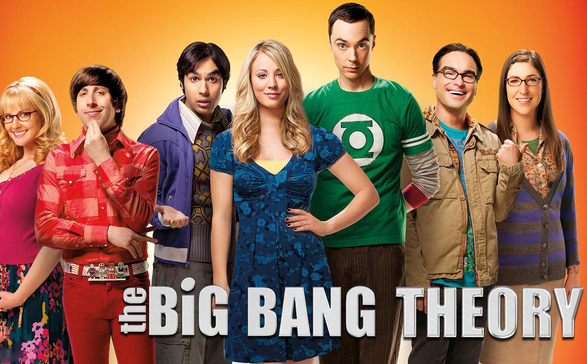

The Big Bang Theory
Watch Mondays at 8/7c on CBS
Leonard and Sheldon are brilliant physicists, the kind of "beauful minds" that understand how the universe works. But none of that genius helps them interact with people, especially women.
All this begins to change when a free-spirited beauty named Penny moves in next door. Sheldon, Leonard's roommate, is quite content spending his nights playing Klingon Boggle with their socially dysfunctional friends, fellow Caltech scientists Wolowitz and Koothrappali. However, Leonard sees in Penny a whole new universe of possibilities ... including love.
Cast
Sheldon Cooper
Leonard Hofstadter
Amy Farrah Fowler
Penny
Raj Koothrappali
Howard Joel Wolowitz
Bernadette Rostenkowski-Wolowitz
Seasons
Season 1
1. "Pilot"
2. "The Big Bran Hypothesis"
3. "The Fuzzy Boots Corollary"
4. "The Luminous Fish Effect"
5. "The Hamburger Postulate"
6. "The Middle-Earth Paradigm"
7. "The Dumpling Paradox"
8. "The Grasshopper Experiment"
9. "The Cooper-Hofstadter Polarization"
10. "The Loobenfeld Decay"
11. "The Pancake Batter Anomaly"
12. "The Jerusalem Duality"
13. "The Bat Jar Conjecture"
14. "The Nerdvana Annihilation"
15. "The Nerdvana Annihilation"
16. "The Pork Chop Indeterminacy"
17. "The Peanut Reaction"
18. "The Tangerine Factor"
Season 2
1. "The Bad Fish Paradigm"
2. "The Codpiece Topology"
3. "The Fuzzy Boots Corollary"
4. "The Griffin Equivalency"
5. "The Euclid Alternative"
6. "The Cooper–Nowitzki Theorem"
7. "The Panty Piñata Polarization"
8. "The Lizard–Spock Expansion"
9. "The White Asparagus Triangulation"
10. "The Vartabedian Conundrum"
11. "The Bath Item Gift Hypothesis"
12. "The Killer Robot Instability"
13. "The Friendship Algorithm"
14. "The Financial Permeability"
15. "The Maternal Capacitance"
16. "The Cushion Saturation"
17. "The Terminator Decoupling"
18. "The Work Song Nanocluster"
19. "The Dead Hooker Juxtaposition"
20. "The Hofstadter Isotope"
21. "The Vegas Renormalization"
22. "The Classified Materials Turbulence"
23. "The Monopolar Expedition"
Season 3
1. "The Electric Can Opener Fluctuation"
2. "The Jiminy Conjecture"
3. "The Gothowitz Deviation"
4. "The Pirate Solution"
5. "The Creepy Candy Coating Corollary"
6. "The Cornhusker Vortex"
7. "The Guitarist Amplification"
8. "The Adhesive Duck Deficiency"
9. "The Vengeance Formulation"
10. "The Gorilla Experiment"
11. "The Maternal Congruence"
12. "The Psychic Vortex"
13. "The Bozeman Reaction"
14. "The Einstein Approximation"
15. "The Large Hadron Collision"
16. "The Excelsior Acquisition"
17. "The Precious Fragmentation"
18. "The Pants Alternative"
19. "The Wheaton Recurrence"
20. "The Spaghetti Catalyst"
21. "The Plimpton Stimulation"
22. "The Staircase Implementation"
23. "The Lunar Excitation"
Season 4
1. "The Robotic Manipulation"
2. "The Cruciferous Vegetable Amplification"
3. "The Zazzy Substitution"
4. "The Hot Troll Deviation"
5. "The Desperation Emanation"
6. "The Irish Pub Formulation"
7. "The Apology Insufficiency"
8. "The 21-Second Excitation"
9. "The Boyfriend Complexity"
10. "The Alien Parasite Hypothesis"
11. "The Justice League Recombination"
12. "The Bus Pants Utilization"
13. "The Love Car Displacement"
14. "The Thespian Catalyst"
15. "The Benefactor Factor"
16. "The Cohabitation Formulation"
17. "The Toast Derivation"
18. "The Prestidigitation Approximation"
19. "The Zarnecki Incursion"
20. "The Herb Garden Germination"
21. "The Agreement Dissection"
22. "The Wildebeest Implementation"
23. "The Engagement Reaction"
24. "The Roommate Transmogrification"
Season 5
1. "The Skank Reflex Analysis"
2. "The Infestation Hypothesis"
3. "The Pulled Groin Extrapolation"
4. "The Wiggly Finger Catalyst"
5. "The Russian Rocket Reaction"
6. "The Rhinitis Revelation"
7. "The Good Guy Fluctuation"
8. "The Isolation Permutation"
9. "The Ornithophobia Diffusion"
10. "The Flaming Spittoon Acquisition"
11. "The Speckerman Recurrence"
12. "The Shiny Trinket Maneuver"
13. "The Recombination Hypothesis"
14. "The Beta Test Initiation"
15. "The Friendship Contraction"
16. "The Vacation Solution"
17. "The Rothman Disintegration"
18. "The Werewolf Transformation"
19. "The Weekend Vortex"
20. "The Transporter Malfunction"
21. "The Hawking Excitation"
22. "The Stag Convergence"
23. "The Launch Acceleration"
24. "The Countdown Reflection"
Season 6
1. "The Date Night Variable"
2. "The Decoupling Fluctuation"
3. "The Higgs Boson Observation"
4. "The Re-Entry Minimization"
5. "The Holographic Excitation"
6. "The Extract Obliteration"
7. "The Habitation Configuration"
8. "The 43 Peculiarity"
9. "The Parking Spot Escalation"
10. "The Fish Guts Displacement"
11. "The Santa Simulation"
12. "The Egg Salad Equivalency"
13. "The Bakersfield Expedition"
14. "The Cooper/Kripke Inversion"
15. "The Spoiler Alert Segmentation"
16. "The Tangible Affection Proof"
17. "The Monster Isolation"
18. "The Contractual Obligation Implementation"
19. "The Closet Reconfiguration"
20. "The Tenure Turbulence"
21. "The Closure Alternative"
22. "The Proton Resurgence"
23. "The Love Spell Potential"
24. "The Bon Voyage Reaction"
Season 7
1. "The Hofstadter Insufficiency"
2. "The Deception Verification"
3. "The Scavenger Vortex"
4. "The Raiders Minimization"
5. "The Workplace Proximity"
6. "The Romance Resonance"
7. "The Proton Displacement"
8. "The Itchy Brain Simulation"
9. "The Thanksgiving Decoupling"
10. "The Discovery Dissipation"
11. "The Cooper Extraction"
12. "The Hesitation Ramification"
13. "The Occupation Recalibration"
14. "The Convention Conundrum"
15. "The Locomotive Manipulation"
16. "The Table Polarization"
17. "The Friendship Turbulence"
18. "The Mommy Observation"
19. "The Indecision Amalgamation"
20. "The Relationship Diremption"
21. "The Anything Can Happen Recurrence"
22. "The Proton Transmogrification"
23. "The Gorilla Dissolution"
24. "The Status Quo Combustion"
Season 8
1. "The Locomotion Interruption"
2. "The Junior Professor Solution"
3. "The First Pitch Insufficiency"
4. "The Hook-up Reverberation"
5. "The Focus Attenuation"
6. "The Expedition Approximation"
7. "The Misinterpretation Agitation"
8. "The Prom Equivalency"
9. "The Septum Deviation"
10. "The Champagne Reflection"